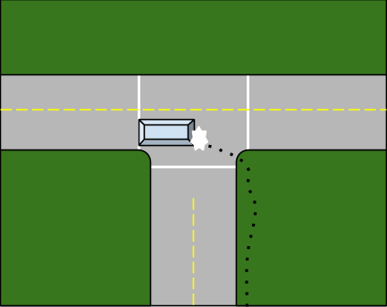
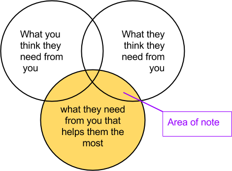

There is a story on child neglect called The Girl In The Window. When the police came to investigate and rescue the child (Danielle) from the horrific scene, the mother was asked how could she let this happen? She said “I’m doing the best I can”. I never realized it before, but, because of the subjectiveness of it, her perspective of trying one's best may very well be true. Discovering Danielle
“I’m trying my best”- I often use those words to describe some of my endeavors. I have been disappointed by people who used those words in the past. For me, Danielle’s story was a new, extreme low. I think it would be best if we, together, consider some generalized actions and trains of thought that might come to mind when this statement involves others, and try to imagine a behavior that is as different from Danielle’s mother as possible.
Also, in Robert Firestone’s book, Compassionate Child Rearing, one, among the many bold statements he makes is: “Honest, unloving mothers and fathers inflict far less damage on their children than role playing parents.” Thinking along these lines, a parent saying “I would do anything for you” untruthfully causes more harm than a parent honestly saying “I’ll feed, clothe, and shelter you, but not try to move heaven and earth for you”. That’s two options:
1. Say you’ll do anything for them untruthfully
2. Say you will fulfill their basic needs truthfully
I think there might be another option to consider. A willingness to do anything for them and demonstrating it through the actions one would take:
3. Truthfully convey your willingness to do anything for them through your actions
But, what would those actions entail?
When a mentally healthy, stable, and truthful person says “I’m trying my best” these are the 4 basic actions that I would assume go along with it, and my reasoning behind it:
When trying your best, how hard an individual tries to accomplish a goal is, in some ways, comparable to how much effort a business is willing to put in to make a consumer product or tool.
In those fields, an important aspect to consider is user interface.
From Wikipedia.com:
“The user interface, in the industrial design field of human–machine interaction, is the space where interaction between humans and machines occurs. The goal of this interaction is effective operation and control of the machine on the user's end, and feedback from the machine, which aids the operator in making operational decisions. Examples of this broad concept of user interfaces include the interactive aspects of computer operating systems, hand tools, heavy machinery operator controls, and process controls. The design considerations applicable when creating user interfaces are related to or involve such disciplines as ergonomics and psychology.”
“Generally, the goal of human-machine interaction engineering is to produce a user interface which makes it easy, efficient, and enjoyable to operate a machine in the way which produces the desired result. This generally means that the operator needs to provide minimal input to achieve the desired output, and also that the machine minimizes undesired outputs to the human.”
-http://en.wikipedia.org/wiki/User_interface
Sometimes an updated version of a product is made and, with that, an update to it’s user interface. Designers may have discovered that they can get rid of some quirks that made it harder for new users to approach, but, in doing so, they may alienate older users who are familiar with it. The older users must, essentially, unlearn the quirks and relearn how to use it by instinct. A good example of this, today, is the user interface changes in popular social networking sites like facebook. New users may like it, old users might complain about having to learn it again.
In a business setting, the decision about whether to change the user interface may be based purely on money. How much would it cost to retrain? how much would it save in the long run? etc... It might make perfect sense not to change the user interface at all.
On the other hand, some products greatly benefit from being understandable to new users. Sometimes user interface designers go through a dizzying amount of trouble to make sure their tools are as easy to use as possible. They set up video camera to record common mistakes, ask in depth questions, sometimes digging deeper by setting up focus groups, and even unearthing why people approached it that particular way.
Similar to how it is of great interest for user interface designers to understand the troubles encountered by people new to a tool, I argue that a basic interest of those who try their best for others should be to understand parts of the world that give them troubles.
If part of the world is giving a loved one grief or trouble, consider changing it. If there is a play area with a nail sticking out or a missing floorboard, telling your kids about the fact that there are dangers here is good, but fixing it would be even better. If there is not enough food or water to satisfy them, consider changing that part of the world. If there isn’t enough toys for them to satisfy their need to learn and practice skills, giving them a world with adequate toys is certainly an action in line with helping your loved ones. It is a positive thing that they don’t have to adjust to a world where there is surprising dangerous hazards, little food and water, and little positive stimulation.
But, what if there is something in the world giving your loved one grief, but it’s much bigger than a nail or a missing floorboard? What if it’s something that is so normal, it’s hard to consider? I argue that one who is trying harder than another is one who is able to consider changing more grief causing obstacles. One who tries their best would be one who considers if every frustrating obstacle is worth changing.
Imagine if crosswalks were always just a single line that you must stay on the side opposite to the nearest traffic that runs parallel to it. Children may sometimes get confused or get into accidents trying to remember what side to be on. Imagine there would be more than a few incidents of parents shouting at them and maybe even calling them stupid. Would it be worthwhile to repaint the world’s crosswalks with 2 lines instead of one? Are the single line crosswalks an arbitrary, capricious norm worth replacing with something else? Would someone who tries their best find a way to fix this?

Your dear ones would want their own dear ones (current and future) to go through minimal hardship. They want their loved ones to develop in a stable, minimally temperamental world and not go through anything needlessly frustrating or counter intuitive. Your loved ones happiness is dependent on the well being of their own loved ones. It might be in your best interest to nip these inconsistencies in the bud, or make a little progress, before they propagate to your loved ones, their loved ones, their loved ones’ loved ones… etc.
Say you witness a particular common mistake a dear one makes, but you are hesitant to consider changing the whole world just so they don’t make that mistake again. Even though a particular common mistake a dear one makes doesn’t currently seem viable to change now, I argue that a basic action of those who try their best is to confirm and acknowledge:
An example might be silent letters in words in english. For children and other english learners, which letters are silent and which words have silent letters seems subject to random whimsy. It may not be viable today to change all the dictionaries, but acknowledging (even half joking) that some time in the next 100 years, after you accomplish your other goals, you might consider tackling this problem; might be a good way to address that issues satisfiably for those with a good imagination.
The following feelings you have might be a good indication that you found an arbitrary norm to add to your list of quirks worth acknowledging.
Although it is important for children to listen to their parents, for you to respect your former mentors, and teach kids about the world, these are not the first thoughts of someone who's curious in how loved ones new to the world use the world, and therefore, I argue, not the thoughts of someone trying their best.
Trying your best sometimes involves competing to achieve the number one spot in a competition. Genetic and wildcard factors aside, a person who gets first place is generally seen as the one who wanted it more, spent the most time training, and was willing to sacrifice the most to achieve it. The one who tried their best. Even if you’re not competing against anyone, an olympic gold level of effort comes close to a human being trying their literal best.
Whether you're competing in a sport or business, watching what your competitors do and what works for them is a pretty standard practice. If you're not operating under a secretive cutthroat environment, but a kind of interconnected one, there is generally new research and technology on any given field every day. I argue, one who tries their best would at least stay up to date on the latest research. With regards to dear ones, there's always new techniques and studies to consider in the fields of communication, parenting, and interpersonal skills. There are even new developments in systems that impact your loved one and their environment.
Imagine if you were an olympic athlete that focused all your energy on one particular training technique and not spending at least a little bit of time looking up the latest developments in the human body, equipment, etc. You would probably get left behind as new developments overtake you.
Even though focusing hard for extended periods on a single way of doing things -to the point where you sacrifice an interest in other ways- is commendable, in some respects, it is obviously not the action of one whose priority is staying up to date on new developments, and therefore, I argue, not the action of one who is trying their best.
Also, for those in a competition, doing what everybody else is doing will probably only get you as far as them. To achieve an even more critical edge, you may need to find and use undiscovered methods. I argue that one who tries their best also pushes the state of the art with their own research.
Imagine if you have two companies who rival each other in a highly competitive field One keeps their product the same and the other tries to experiment on new ideas or projects that have a higher risk of failing. These competitive companies might go back and forth on profit margins based solely on whether the risk was worth it or not. If their goals are to make money, either strategy may be valid, but, if their goals are to push the field further, only the latter company lives up to that ideal.
Even though it may be seen as honorable and respectful doing things the old fashioned way, it is not the action of one who pushes the state of the art, and therefore, I argue, not the action of one who tries their best.
As touched upon in the last part, even though you may be using some elements of a competitive mindset to give the best to your dear ones, it’s probably in everyone's best interest to cultivate a less cut throat environment and form a more collaborative one.
Imagine if two neighbors not only competed against each other to provide the best for their family, but also put some effort to sabotage each other (like ruining each others’ yards, homes, etc.) Destruction seems easier than creating. Both of their families would be worse off, because their time spent bringing the other neighbor down could be spent helping their own family. If the neighbors focused more on moving themselves forward instead of pulling their rivals back, both of their families would be farther.
Keeping to yourself may be a definite improvement over sabotage, but, is there anything else the neighbors could try that might be even more beneficial to their families? I argue that a basic action of those who try their best is to seek collaboration.
As an example, imagine two amatuer scientists working hard, individually, on problems related to vision impairment: what causes vision impairment? what can they do to cure it? how do they help people who have it? etc. Imagine one day they met at a social gathering and just stuck with small talk, and never got into their primary interests. They could have possibly shared equipment or even given each other excellent feedback on problems they have. They could have helped each other identify structures in public that cause vision impaired people great difficulty, and some arbitrary norms in the world that cause vision impairment. Perhaps they could have even helped each other in more profound ways.
Building upon what was spoken in the last part, about how the actions of someone who tries their best leads them to actively pursue more information, I argue that a basic interest of those who try their best should be directed towards understanding the reasoning behind why people with similar goals use different strategies.
Imagine if there was a family whose mother suffers from a unique illness. The adult siblings decide to try and find a cure for their mother, but each are motivated by a different technology that they think could help. They go on to spend weeks working on their particular technology alone, barely in contact with the others. Each feels that their siblings should be more interested in the technology they've chosen, as well as their progress in bringing it to fruition. At the same time, they feel they are much too busy to try to understand their siblings’ ideas. They also feel they must appear confident of their prediction in their chosen technology, and the “best” way to do that is by showing no interest in others.
Imagine there was another family in a similar situation. Instead of the siblings going their separate ways and almost completely cutting each other off, they deeply try to understand what the others’ problems are in bringing the technology to fruition. Each of them understands the reasons their siblings may feel it’s the best; so well, in fact, that if they met someone else who had an interest in their sibling’s technology, they could have a conversation about it and answer most of their questions. They may even help eachother out with some of the hardships in bringing it to realization.
Do you think the siblings operating with disinterest would give their mother a greater chance of survival, or if the siblings operated in an environment where each sibling respectfully tried to understand each others’ vision? Previously, I argued that one who tries their best also pushes the state of the art. If you’re really pushing it, you will probably be following several different leads that may hold promise, and proving to yourself weather a way is right or wrong. Pushing the state of the art simultaneously with others would be of great interest.
Even though having confidence in how certain strategies play out in your imagination (so much that you ignore other ideas) might get you far in many other areas of life, and even though a tunnel vision focus on your current strategy may seem like an optimal use of your efforts, these are not the actions of someone who is trying their best to communicate with respect and understanding with your peers and therefore, I argue, not the actions of someone trying their best.
Building on what was said before about pushing the state of the art with your own research, if you are trying your best, you will probably have several unsolved problems on your workbench as you go through your day. Some of historys greatest epiphanies and eureka moments occur when the humble scientist happens upon a chance experience that helps resolve one of these problems. Maybe you even experience smaller versions of epiphanies or eureka moments. It would be hard to imagine someone pursuing a long term goal without having at least one.
From wikipedia:
“An epiphany … is an experience of sudden and striking realization. Generally the term is used to describe scientific breakthrough, religious or philosophical discoveries, but it can apply in any situation in which an enlightening realization allows a problem or situation to be understood from a new and deeper perspective”
-http://en.wikipedia.org/wiki/Epiphany_(feeling)
I argue that a basic action of those who try their best should be to respect and increase the likelihood of epiphanies.
Imagine there is a team of scientists trying to find a cure for cancer. Even though cancer is a mysterious and frustrating problem, the director of the team tries very hard to play his boss position well. Attempting to appear as the smartest person there, he constantly tells the team why he thinks their suggestions are wrong, and never allows for experimentation. In addition to being very odd in a scientific setting, don't you think it would be better if the director treated every scientist as if they could provide an epiphany to curing cancer?
Earlier it was discussed how someone who tries their best is one who pushes the state of the art with their own research. A potentially vital input might be how seemingly unrelated ideas might provide good insight into that research. I argue that a basic interest of those who try their best should be directed towards understanding how unrelated or random events could relate to their problems.
Imagine there was a man named John who just graduated college and goes on to start a small business for innovative products. John decided the time to be awkward was over and he wished to be more confident. To him, this means having confidence in handling every situation. Even though he has very limited knowledge of how the universe works as a whole, John goes on to live like this.
Like the previous example of the family members whose mother had a disease, in addition to treating every person with disinterest, John treats every experience he encounters with listlessness as well. Being lost in thought or in awe of something in public is a sign of lack of confidence, to him. I ask you, again, to imagine the idea of a rival business, one to John’s. If the rival business was the same in every way, but the head of that business showed much more awe and interest in the world around them, who do you think has a better chance of coming up with innovative products?
Even though “fake it till you make it”, and “be confident” sorts of advice might be a good rule to follow to get ahead in life, following it exclusively is not the action of someone who opens themselves to epiphanies, and observes how unrelated events could relate the their problems, and therefore, I argue, is not the action of someone trying their best.
I also argue that the action of those who try their best is to seek epiphanies from as many people as possible.
Take for, example, John again. He has started talking to more people and getting a feel for who they are and trying to find epiphanies in their own life, but he only does it to about half the people he meets. He does not bother trying with people who are too young, too old, or those he cannot relate to.
Imagine if someone else, instead, tried to speak this way, indiscriminately, with everyone they met. Who do you think has a better chance to get an epiphany? Who do you think is trying harder?
I also argue that a basic action of one who tries their best for others is to familiarize yourself with your dependence on their ability to communicate their needs to you.
Imagine a parent who gets not one, not two, but three jobs to make sure their kids have everything they need, a big house, a huge yard, etc, but neglect to spend time with them. This parent might say they are trying their very best to make their children feel loved. If the child would say they feel otherwise, the parent might get very upset.

If you are trying your best, figuring out what you can provide that helps them the most is going to be a difficult long term goal of yours. You probably have several ideas that may help them the most. They, too, might also have some ideas on ways you can help them. Some of your ideas might end up working, some might not. Some of their ideas might work, some might not. Everybody is different. Somewhere there exists a theoretical way to provide the most optimal best for your dear one, even if no-one knows what that is.
In order to get closer to achieving your long term goal, you may need to try some things that you think will not work. If you just stick with ideas you think would work, you will be limiting yourself. A vital resource for these ideas might be the loved one you are trying to help.
Additionally, they might provide another vital resource in helping achieve your goals. You can never truly be sure whether something you do to help is the best use of your resources or not. You are extremely dependent on observing results and their own feedback to know if an idea is hurting them, helping them a little, or profoundly helping them the way you intend.
As mentioned before, forcing your loved ones to use your ideas solely because they should respect their elders, and exerting your maximum effort to give them things you think they need may be commendable, in some respects, they are not the actions of someone who has acknowledged their dependence on your dear one’s ability to communicate with you, and therefore, I argue, not the actions of someone who is trying their best.
I believe there are some concrete actions one takes when a person of mature thinking says they are trying their best, especially in consideration for the dear ones in their life:
Someone who tries their best with concern for others who are still developing would think about how to restructure the world to suit them. Priority is clearly seen in their acts to understand how those new to the world operate, identify any arbitrary norms, and keep a minimal amount of arbitrary norms from negatively affecting them. Generally, if things don’t work as a dear one expects, they would either provide a explanation as to why, or acknowledge the arbitrariness of it and begin thinking about a less arbitrary norm to replace it.
Someone who tries their best with anything would continually research the latest and greatest advancements in their field, and even try to make and contributions with their own discoveries. It would be clearly seen in their frequent reading or watching the news on their area of interest, and having their own research going on.
Someone who tries their best would seek mature and respectful conversation with others. It would be clear in how they usually talk to others, either directing the conversation to understand how similar each of your endeavors are, understanding why their path was chosen, and what progress had been made; or, if their goals relate to young dear ones, talking about whether they feel a norm is identifiable as arbitrary and, thinking, together, on how to fix any perceived arbitrary norms in the world. Even though they might view some of their peers as rivals, they would only be seen taking actions to help them flourish. They would pursue a sort of “competitive camaraderie” with them to drive forward their similar goals.
Someone who tries their best does not ignore their dependence on external forces for ideas or epiphanies. They would seek such epiphanies with everyone they meet, indiscriminately. You can see it in how they are unafraid to act in awe or confusion to new experiences and how they speak to everyone in an equally interested way. If their best relates for a concern for another, they would observe the outcome of ideas they try, try different ideas (even ones from their own loved one) and compare them to see what works the best.